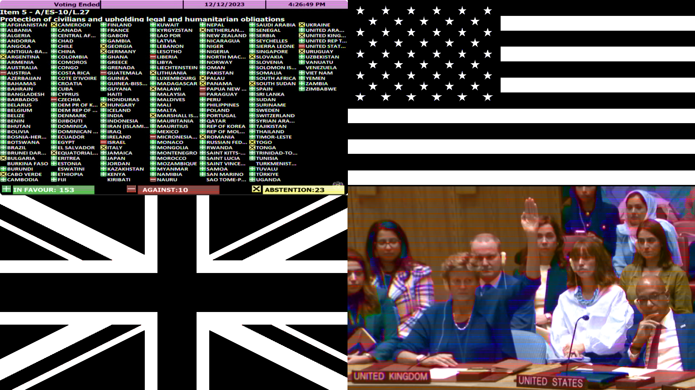
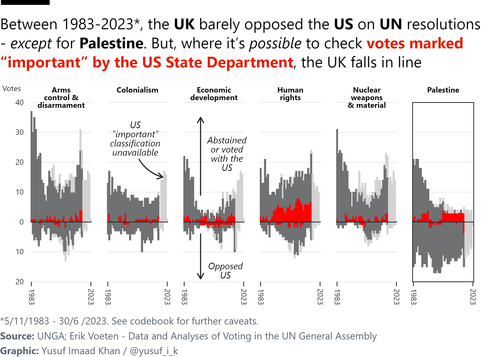
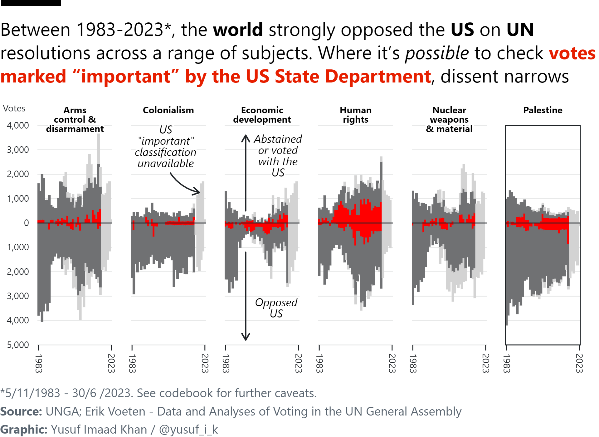

In light of the UK’s recent abstentions at the UN on a ceasefire in Gaza, I do some simple analysis on UK/US voting patterns at the UN General Assembly.

The United States no longer bothers about low intensity conflict. It no longer sees any point in being reticent or even devious. It puts its cards on the table without fear or favour. It quite simply doesn’t give a damn about the United Nations, international law or critical dissent, which it regards as impotent and irrelevant. It also has its own bleating little lamb tagging behind it on a lead, the pathetic and supine Great Britain.
On Friday, the UK abstained on a UN Security Council vote for a ceasefire in Gaza. The US vetoed it. On Tuesday, the UK abstained again on a UN General Assembly vote for a ceasefire in Gaza. It passed. The Security Council vote would have been legally binding, the latter General Assembly vote is non-binding and symbolic - reflecting opinion amongst member states.
We cannot be naive about who the UN serves and how, but it is not trivial that 82% of the General Assembly voted for the ceasefire (153 for, 10 against, 23 abstentions) compared to 68% previously for the truce (121 for, 14 against, 44 abstentions).
The Palestinian people have refused to give up on their long struggle for liberation and freedom. The latest General Assembly result reflects the organisation and pressure of people worldwide in support of that struggle. Though the power does not reside with the General Assembly, maintaining and increasing pressure on member states to call for a ceasefire is critical to save lives, and to influence what happens next.
Under this arrangement, it doesn’t matter whether the UK is referred to as the “lieutenant” of American foreign policy, or how many times the term “Special Relationship” is publicly employed by UK officials to feign a relationship among equals. This arrangement is vastly conditioned by US economic, political, and military interests. Previous failures to comply by the UK have been rebuked by the US.
All this is to say, a stooge is a stooge, and each UK abstention from voting for a ceasefire in Gaza is complicity with genocide.
What we are complicit in
Let us first be clear about what the UK has helped create (historically and at present with oursupport), and what we are complicit in. I am not attempting this for completeness, novelty, or to lay claim to expertise that I don’t possess. Instead, my aim is to summarise some of what can easily be learnt about the present situation. You may wish to skip this section if you are up to date. Please correct me if I am mistaken. I would encourage looking at the following sources:
I am an academic. Probably the toughest thing I have at home is an Expo marker. But if the Israelis invade, if they barge at us, charge at us open door-to-door to massacre us, I am going to use that marker to throw it at the Israeli soldiers, even if that is the last thing that I would be able to do. And this is the feeling of everybody. We are helpless. We have nothing to lose.
— Dr. Refaat Alareer
The Israeli army did not charge at Professor Refaat Alareer in person. They ordered an airstrike. Think about this. The US, (arguably) the most powerful entity on Earth, arms, finances, protects, and supports Israel - itself a nuclear power. And yet, the Israeli army could not face Professor Alareer in person. Instead they resorted to an airstrike. What might that say about Israel? What might that say about Professor Refaat Alareer? Professor Alareer’s final published poem has been circulating and has been translated into multiple languages across the world.
In this post, my main aim was to do some simple analysis of UN General Assembly votes in light of the UK’s recent abstention. Simply put, I wanted to look at how often the UK follows the US at the UN General Assembly, and see if I could shed light on some obvious patterns of subordination.
The data I am using come from here - Erik Voeten - Data and Analyses of Voting in the UN General Assembly - UNVotes.rda - updated 21/09/2023
What follows, of course, comes with caveats. Click below to see them:
Caveats
The data I am using is only available between 01/01/1946 - 30/06/2023. So it does not include the most recent votes.
The issue classifications are based on “searches in descriptions”, have been subjected to a “rudimentary visual check”, and “may not be 100% accurate”
The breakdown of the dataset coverage is as follows (I have copy and pasted this from the codebook):
ME: Votes relating to the Palestinian conflict (19%)
NU: Votes relating to nuclear weapons and nuclear material (13%)
DI: Votes relating to arms control and disarmament (16%)
CO: Votes relating to colonialism (18%)
HR: Votes relating to human rights (17%)
EC: Votes relating to (economic) development (9%)
These classifications cover 92% of resolutions in the dataset. I have left out the 8% which have no classification (I think some of these cover e.g. votes about the UN itself).
Whilst member states may choose to abstain for many reasons, I have chosen to interpret them alongside “agree” with the following disjunction “abstained or voted with X”. This is because I am interpreting abstentions as functionally equivalent to leaving a resolution unopposed - as the UK is now doing.
The variable “important” refers to votes marked by the US state department as important in their yearly report on voting practices in the US. NOTE - IT IS NOT AVAILABLE FOR ALL YEARS. I have tried to make this clear.
UK vs the US at the UN General Assembly
In a nutshell, I’ve taken the UN General Assembly data, and counted how many times the UK has either voted against the US, OR abstained/voted with the US. I call this variable “sycophancy”, and it should reveal the sort of patterns we’re seeing now - where the UK does not directly disagree with the US, but does not oppose it.
Two interesting variables in this dataset. First, there is a classification for what issues are being voted on (e.g. Human Rights/Palestine) - so we can break votes down specifically to see UK votes on Palestine. Second, there is a variable called “important votes”. These are votes marked by the US state department as important in their yearly report on UNGA voting practices. This classification has been available since 1983, and was created to keep an eye on countries who were receiving aid from the US. I had a source for this claim - I need to find it. For now, put in their own terms, the US State Department say:
Important issues are defined in the U.S. Department of State’s annual U.S. Congressional Report on “Voting Practices in the United Nations” and by Public Law 101-246 which calls for, with respect to plenary votes for the UN General Assembly, a listing of “votes on issues which directly affected important United States interests and on which the United States lobbied extensively.” An essential basis for identifying “important” issues is their consistency with the State Department’s Strategic Goals.
We can reappropriate this classification for our own ends. Specifically, it would help track how often the UK goes along with key US interests - thus helping us track its obvious role as sycophantic stooge a bit better. We must be careful about interpreting this, because of course different parts of US government can disagree (e.g. State Department vs. Pentagon). But I still think this is a helpful and interesting classification to work with.
Here is the cleaned up data:
Code
library(tidyverse)library(janitor)library(readr)load("UNVotes.rda")# vote – Vote choice# 1 – Yes# 2 – Abstain# 3 – No# 8 – Absent# 9 – Not a member# Work out UK vs USA at the UNuk_vs_us_votes <- completeVotes %>%clean_names() %>%# select relevant varsselect( country, countryname, date, unres, vote, descr, importantvote, me, nu, di, hr, co, ec) %>%# filter for relevant countries (noting name change some years and no codes)filter(country%in%c("UNITED STATES", "UNITED KINGDOM") | countryname%in%c("United States of America", "United Kingdom of Great Britain and Northern Ireland") | country%in%c("USA", "GBR")) %>%filter(!vote==8) %>%# remove absences # make variable to flag identical votes group_by(unres, date) %>%mutate(flag =n_distinct(vote) ==1) %>%ungroup() %>%# make variable for sycophance - defined as abstaining or voting with Xmutate(sycophancy =case_when( vote ==2~"Agreed", # 2 = abstain. flag ==TRUE~"Agreed", flag ==FALSE~"Disagreed" )) %>%# filter only for UKfilter(country=="UNITED KINGDOM"| countryname=="United Kingdom of Great Britain and Northern Ireland"| country=="GBR", date>="1983-01-01"# from 1983 as "important" classification available then ) %>%pivot_longer(8:13, names_to ="issue_code", values_to ="issue_flag") %>%filter(issue_flag==1 ) %>%mutate(year =year(date),sum=1)# Prep for faceted diverging bar chartdiverging_bars_uk <- uk_vs_us_votes %>%select(year, issue_code, importantvote, sycophancy) %>%mutate(importantvote =case_match( importantvote,1~"Important",0~"Not important",NA~"Unavailable" ),issue_code =case_match( issue_code,"me"~"Palestine","nu"~"Nuclear weapons & material","di"~"Arms control & disarmament","co"~"Colonialism","hr"~"Human rights","ec"~"Economic development" )) %>%mutate(count =1) %>%group_by(year, issue_code, importantvote, sycophancy) %>%summarise(sum =sum(count)) %>%mutate(sum =if_else(sycophancy=="Disagreed", sum*-1, sum)) glimpse(diverging_bars_uk)
And this is what it looks like if we take some time to lay it out:
Between 1983-2023*, the UK barely opposed the US on UN resolutions - except for Palestine. But, where it’s possible to check votes marked “important” by the US State Department, the UK falls in line
*5/11/1983 - 30/6 /2023. See codebook for further caveats. Source: UNGA; Erik Voeten - Data and Analyses of Voting in the UN General Assembly Graphic: Yusuf Imaad Khan / @yusuf_i_k
The patterns are quite striking - even if this is quite a dense chart. Hopefully the title and annotations aid interpretation. Do let me know if you have better ideas. I have been somewhat stubborn in insisting that all this information could go on the same chart.
US vs the World at the UN General Assembly
Having taken things this far, we may as well go a little further. What does this look like for the whole world vs the US at the UN General Assembly? This analysis has been done elsewhere, but maybe not broken down for important votes and the the specific six topics.
Once again, here is the cleaned up data - counting how many times the world has either voted against the US, OR abstained/voted with the US.
Code
# Repeat the process but for the whole World vs USA at UNworld_vs_us_votes <- completeVotes %>%clean_names() %>%select(country, countryname, date, unres, vote, descr, importantvote, me, nu, di, hr, co, ec) %>%filter(!vote==8,!vote==9) # 9 = not a member usa_votes <- world_vs_us_votes %>%filter(country=="UNITED STATES"| countryname=="United States of America"| country=="USA") %>%select(unres, date, vote) %>%rename(us_vote = vote)world_vs_us_votes <- world_vs_us_votes %>%filter(!country=="UNITED STATES"|!countryname=="United States of America"|!country=="USA") %>%left_join(usa_votes , by =c("unres", "date")) %>%mutate(flag = us_vote == vote) %>%mutate(sycophancy =case_when( vote ==2~"Agreed", # 2 = abstain. flag ==TRUE~"Agreed", flag ==FALSE~"Disagreed" )) %>%filter(date>="1983-01-01") %>%pivot_longer(8:13, names_to ="issue_code", values_to ="issue_flag") %>%filter(issue_flag==1 ) %>%mutate(year =year(date),sum=1) %>%distinct()diverging_bars_world <- world_vs_us_votes %>%select(year, issue_code, importantvote, sycophancy) %>%mutate(importantvote =case_match( importantvote,1~"Important",0~"Not important",NA~"Unavailable" ),issue_code =case_match( issue_code,"me"~"Palestine","nu"~"Nuclear weapons & material","di"~"Arms control & disarmament","co"~"Colonialism","hr"~"Human rights","ec"~"Economic development" )) %>%mutate(count =1) %>%group_by(year, issue_code, importantvote, sycophancy) %>%summarise(sum =sum(count, na.rm=T)) %>%mutate(sum =if_else(sycophancy=="Disagreed", sum*-1, sum)) glimpse(diverging_bars_world)
Between 1983-2023*, the world strongly opposed the US on UN resolutions across a range of subjects. Where it’s possible to check votes marked “important” by the US State Department, dissent narrows
*5/11/1983 - 30/6/2023. See codebook for further caveats. Source: UNGA; Erik Voeten - Data and Analyses of Voting in the UN General Assembly Graphic: Yusuf Imaad Khan / @yusuf_i_k
As you might have expected, when compared to the UK, the pattern flips for the whole world vs the US. Far more direct disagreement across all six topics - but once again a narrowing of dissent on key US priorities. Once again, do let me know if you have feedback, any ideas/suggestions, and if you’ve spotted any issues in my code (which is all open).
Conclusion
These charts may strike you as obvious or trivial. But I think being armed with the facts and having a clear picture of what is going on are too important to dismiss. For those who believe the situation is hopeless, and that the UK vote at the UN doesn’t matter, consider asking why the UK didn’t just support the General Assembly resolution for the ceasefire symbolically.
PNGs
I had some trouble with dependencies and the charts weren’t loading properly. So here are the PNGs too:


Postscript
I sat on these charts for a little while because I thought they were obvious, trivial, and idiotic. On further reflection, I decided they might not be, and that I should write this up. This was for a few reasons:
This invocation by Asem al-Nabih, a friend of Refaat Alareer, to speak up…
Footnotes
In 2021, after some discussion on several calls, Biden finally demanded Netanyahu stop the bombing of Gaza by saying “Hey, man, we’re out of runway here…It’s over”. By the end of the call, “Netanyahu reluctantly agreed to a cease-fire that the Egyptians would broker” - partial paraphrase of an excerpt from Frank Foer’s “The Last Politician”↩︎
I only learnt of Professor Refaat Alareer in October from a video posted by Lowkey. Despite my inital ignorance, I will not forget him.↩︎
Source Code
---title: "The sycophantic stooge of US imperialism"author: "Yusuf Imaad Khan"date: "2023-12-14"categories: [Palestine, UK, US, UN]editor: visual#self-contained: true # cut: inlined assets made pages 4-15MB; real files cache across pagestoc: truetoc-depth: 2code-tools: trueexecute: echo: false warning: false message: false---*In light of the UK's recent abstentions at the UN on a ceasefire in Gaza, I do some simple analysis on UK/US voting patterns at the UN General Assembly.*{fig-align="center" width="691"}> The United States no longer bothers about low intensity conflict. It no longer sees any point in being reticent or even devious. It puts its cards on the table without fear or favour. It quite simply doesn't give a damn about the United Nations, international law or critical dissent, which it regards as impotent and irrelevant. It also has its own bleating little lamb tagging behind it on a lead, the pathetic and supine Great Britain.>> --- [Harold Pinter, *Art, Truth, & Politics* (2005)](https://www.nobelprize.org/uploads/2018/06/pinter-lecture-e-1.pdf)[On Friday](https://news.un.org/en/story/2023/12/1144562), the UK abstained on a UN Security Council vote for a ceasefire in Gaza. The US vetoed it. [On Tuesday](https://news.un.org/en/story/2023/12/1144717?_gl=1*1m1hboy*_ga*MTk0MDc1OTM0Ni4xNjk4MDE1ODg3*_ga_TK9BQL5X7Z*MTcwMjU1NTg3Mi4xMC4xLjE3MDI1NTU5MTQuMC4wLjA.), the UK abstained again on a UN *General Assembly* vote for a ceasefire in Gaza. It passed. The Security Council vote would have been legally binding, the latter General Assembly vote is *non-binding* and symbolic - reflecting opinion amongst member states.We cannot be naive about [who the UN serves and how](https://newleftreview.org/issues/ii24/articles/peter-gowan-us-un), but it is not trivial that [82%](https://news.un.org/en/story/2023/12/1144717) of the General Assembly voted for the ceasefire (153 for, 10 against, 23 abstentions) compared to [68% previously for the truce](https://www.aljazeera.com/news/2023/12/12/un-general-assembly-votes-overwhelmingly-in-favour-of-gaza-ceasefire) (121 for, 14 against, 44 abstentions).The Palestinian people have refused to give up on their [long struggle for liberation and freedom](https://www.versobooks.com/en-gb/products/3293-from-the-river-to-the-sea). The latest General Assembly result reflects the organisation and pressure of [people worldwide in support of that struggle](https://www.aljazeera.com/gallery/2023/12/11/photos-world-condemns-israels-war-on-gaza-as-it-marches-for-palestine). Though the power does not reside with the General Assembly, maintaining and increasing pressure on member states to call for a ceasefire is critical to save lives, and to influence what happens next.As is well known[^1], the power sits with the US - the only member of the Security Council to [veto the resolution](https://news.un.org/en/story/2023/12/1144562). Of all the times the US has used its veto in the Security Council, [half have been to protect Israel](https://www.instagram.com/p/CzJ0U97OIFN/). The US arms (as do we), protects, and [supports Israel as the face of US imperialism in the Middle East](https://www.youtube.com/watch?v=2HZs-v0PR44). The UK may have [inaugurated](https://podcasts.apple.com/gb/podcast/origins-of-the-israel-palestine-conflict/id1639561921?i=1000606210302) settler colonialism in Palestine, but [in its decline as a global power, UK foreign policy ambitions were subordinated to the US](https://jacobin.com/2023/11/someone-elses-empire-book-review-tom-stevenson-uk-us-imperial-dominance-foreign-policy).[^1]: In 2021, after some discussion on several calls, Biden finally demanded Netanyahu stop the bombing of Gaza by saying "Hey, man, we're out of runway here...It's over". By the end of the call, "Netanyahu reluctantly agreed to a cease-fire that the Egyptians would broker" - [partial paraphrase of an excerpt from Frank Foer's "The Last Politician"](https://twitter.com/_waleedshahid/status/1719508855564939397?s=46)Under this arrangement, it doesn't matter whether the UK is referred to as the ["lieutenant"](https://jacobin.com/2023/11/someone-elses-empire-book-review-tom-stevenson-uk-us-imperial-dominance-foreign-policy) of American foreign policy, or how many times the term ["Special Relationship"](https://en.wikipedia.org/wiki/Special_Relationship) is publicly employed by UK officials to feign a relationship among equals. This arrangement is vastly conditioned by US economic, political, and military interests. Previous [failures to comply by the UK have been rebuked by the US](https://newleftreview.org/sidecar/posts/global-britain).All this is to say, a stooge is a stooge, and each UK abstention from voting for a ceasefire in Gaza is complicity with genocide.## What we are complicit inLet us first be clear about what the UK has helped create ([historically](https://podcasts.apple.com/gb/podcast/origins-of-the-israel-palestine-conflict/id1639561921?i=1000606210302) and [at present](https://news.un.org/en/story/2023/12/1144717) with [our](https://www.theguardian.com/commentisfree/2023/dec/11/uk-factories-weapons-idf-gaza-protest-movement)[support](https://www.declassifieduk.org/britain-secretly-sent-500-extra-troops-to-cyprus-base-being-used-to-supply-weapons-to-israel/)), and what we are complicit in. I am not attempting this for completeness, novelty, or to lay claim to expertise that I don't possess. Instead, my aim is to summarise *some* of what can easily be learnt about the present situation. You may wish to skip this section if you are up to date. **Please correct me if I am mistaken.** I would encourage looking at the following sources:- [Decolonize Palestine](https://decolonizepalestine.com/) and the [reading list](https://decolonizepalestine.com/reading-list/) they have put together- [Al Jazeera - Israel-Gaza war in maps and charts: Live tracker](https://www.aljazeera.com/news/longform/2023/10/9/israel-hamas-war-in-maps-and-charts-live-tracker)- [Financial Times - The Israel-Hamas war in maps: latest updates](https://www.ft.com/content/42bbe534-8a0d-4ba8-9cc6-f84936d87196)- [Gaza: An Inquest into Its Martyrdom - Norman Finkelstein](https://web.archive.org/web/20231023204550/https://arena-attachments.s3.amazonaws.com/24103227/37e371a2bb2d8e8b7942c7baf08872d3.pdf?1697024979)- [From the River to the Sea: Essays for a Free Palestine - Edited by Sai Englert, Michal Schatz and Rosie Warren](https://www.versobooks.com/en-gb/products/3293-from-the-river-to-the-sea)We are witnessing an [ongoing Nakba](https://www.thenation.com/article/archive/harvard-law-review-gaza-israel-genocide/). We are witnessing a [genocide](https://www.thenation.com/article/archive/harvard-law-review-gaza-israel-genocide/) of the Palestinian people. Since October the 7th, [in Gaza and the West Bank at least 18,894 Palestinian people have been murdered by Israel - at least 7,794 of them children](https://www.aljazeera.com/news/longform/2023/10/9/israel-hamas-war-in-maps-and-charts-live-tracker). By now this figure is likely out of date (figures used from - 14/12/23 10:00AM local time, 6:00AM GMT). It cannot be repeated enough that these are [people not numbers](https://wearenotnumbers.org/). It cannot be repeated enough that [this did not begin on October 7th.](https://decolonizepalestine.com/introduction-to-palestine/)Israel's bombing of Gaza has been [catastrophic](https://euromedmonitor.org/en/article/5908/Israel-hits-Gaza-Strip-with-the-equivalent-of-two-nuclear-bombs), and has [drawn comparison to the Allied bombing campaign of Germany](https://www.ft.com/content/7b407c2e-8149-4d83-be01-72dcae8aee7b) for the extent of its devastation. The [total yield of bombs has exceeded the atomic bombings of Hiroshima and Nagasaki](https://euromedmonitor.org/en/article/5908/Israel-hits-Gaza-Strip-with-the-equivalent-of-two-nuclear-bombs). [Hospitals](https://www.aljazeera.com/opinions/2023/11/11/israel-is-bombing-hospitals-in-gaza-with-israeli-doctors-approval), [homes](https://www.ft.com/content/7b407c2e-8149-4d83-be01-72dcae8aee7b), [schools](https://www.aljazeera.com/program/newsfeed/2023/12/11/un-run-school-shelters-in-gaza-are-under-attack-by-israeli-forces), [bakeries](https://www.aljazeera.com/gallery/2023/11/2/gaza-bakeries-destroyed-by-israeli-strikes), [shops](https://www.nytimes.com/interactive/2023/12/12/world/middleeast/gaza-strip-satellite-images-israel-invasion.html?unlocked_article_code=1.FU0.TeqK.1OVe4bJUAeZO&smid=url-share), [universities](https://www.nytimes.com/interactive/2023/12/12/world/middleeast/gaza-strip-satellite-images-israel-invasion.html?unlocked_article_code=1.FU0.TeqK.1OVe4bJUAeZO&smid=url-share), and the [parliament](https://www.nytimes.com/interactive/2023/12/12/world/middleeast/gaza-strip-satellite-images-israel-invasion.html?unlocked_article_code=1.FU0.TeqK.1OVe4bJUAeZO&smid=url-share) have all been bombed. [Even where people attempt to reach "safe zones" in the south - the Israeli army bombs them](https://www.aljazeera.com/gallery/2023/12/9/photos-israel-bombs-gaza-areas-it-called-safe-zones-for-palestinians). There are no "safe zones". Flesh rots under the rubble. [Just as it has](https://www.nytimes.com/2009/01/19/world/africa/19iht-19gaza.19474057.html)[when this has happened before](https://www.visualizingpalestine.org/visuals/timeline-violence-2023).The devastation wrought by the bombing has meant that [85% of the population has been displaced](https://www.ft.com/content/c09cc412-ae5c-423e-8e1d-b888d9f65598). [Almost all of the 2.3 million people have crowded into the south of Gaza](https://www.ft.com/content/c09cc412-ae5c-423e-8e1d-b888d9f65598) - bearing in mind, that the whole Gaza strip [already had one of the highest population densities in the world](https://www.ft.com/content/7b618433-ba5f-4e92-a3e0-d5d41d6d17f8). As a result, Palestinian people are [living on the streets](https://www.aljazeera.com/gallery/2023/12/9/palestinians-displaced-to-south-gazas-overcrowded-areas-living-on-streets). The arrival of winter has exacerbated their suffering as [rains, winds, storms](https://www.theguardian.com/world/2023/dec/10/people-will-die-in-the-streets-gaza-dreads-onset-of-winter-as-disease-rises), and now [floods](https://www.theguardian.com/world/2023/dec/13/gaza-a-living-hell-after-heavy-winter-rains-drench-makeshift-tents), hit their [tents](https://www.theguardian.com/world/2023/dec/13/gaza-a-living-hell-after-heavy-winter-rains-drench-makeshift-tents) and they have [no winter clothing](https://www.bbc.co.uk/news/av/world-middle-east-67548831).The remaining hospitals are overwhelmed - with [only 11 out of 36 "partially functional"](https://www.reuters.com/world/middle-east/gaza-faces-public-health-disaster-un-humanitarian-office-says-2023-12-13/). They are [running out of medication and supplies](https://www.npr.org/2023/12/12/1218692478/gaza-hospital-israel-hamas-khan-younis), hospital procedures have taken place [without anesthetic](https://www.reuters.com/world/middle-east/surgeon-flees-gaza-citys-last-functioning-hospital-after-anaesthetics-run-out-2023-11-17/), and humanitarian aid is [bottle-necked](https://www.aljazeera.com/news/2023/12/9/people-are-starving-wfp-says-humanitarian-operation-in-gaza-collapsing) at a single checkpoint (but [Israel has said it will open a second checkpoint](https://www.ft.com/content/5b77d16c-945e-4033-93b4-b084129e52db)). People are [starving](https://www.bbc.co.uk/news/world-middle-east-67670679). Sanitation conditions are [dire](https://www.theguardian.com/world/2023/dec/07/gaza-disease-clean-drinking-water). All of this combined with the extreme population density has meant that [disease](https://www.aljazeera.com/news/2023/11/28/disease-could-kill-more-in-gaza-than-bombs-who-says-amid-israeli-siege) is spreading fast.What happens when Palestinians speak out? [The courageous and outspoken intellectual, Professor Refaat Alareer](https://electronicintifada.net/content/speak-we-owe-it-refaat/42621)[^2], was [assassinated by air strike](https://electronicintifada.net/blogs/tamara-nassar/refaat-alareer-was-assassinated-israel) along with six members of his family. In a [powerful and poignant interview](https://www.youtube.com/watch?v=HcY2KlllgPo), in the midst of bombardment, Professor Alareer [said the following](https://x.com/intifada/status/1732994197752307842?s=20):[^2]: I only learnt of Professor Refaat Alareer in October from a video posted by [Lowkey](https://twitter.com/Lowkey0nline). Despite my inital ignorance, I will not forget him.> I am an academic. Probably the toughest thing I have at home is an [Expo marker](https://en.wikipedia.org/wiki/Expo_marker "Expo marker"). But if the Israelis invade, if they barge at us, charge at us open door-to-door to massacre us, I am going to use that marker to throw it at the Israeli soldiers, even if that is the last thing that I would be able to do. And this is the feeling of everybody. We are helpless. We have nothing to lose.>> --- Dr. Refaat AlareerThe Israeli army did not charge at Professor Refaat Alareer in person. They ordered an [airstrike](https://electronicintifada.net/blogs/tamara-nassar/refaat-alareer-was-assassinated-israel). Think about this. The US, (arguably) the most powerful entity on Earth, arms, finances, protects, and supports Israel - [itself a nuclear power](https://thebulletin.org/premium/2022-01/nuclear-notebook-israeli-nuclear-weapons-2022/). And yet, the Israeli army could not face Professor Alareer in person. Instead they resorted to an airstrike. What might that say about Israel? What might that say about Professor Refaat Alareer? Professor Alareer's [final published poem](https://lithub.com/watch-brian-cox-read-if-i-must-die-by-murdered-palestinian-poet-refaat-alareer/) has been circulating and has been [translated into multiple languages](https://www.newarab.com/news/gaza-poet-refaat-alareers-words-live-new-translations) across the world.Nothing can excuse these atrocities, and [people understand that](https://www.aljazeera.com/news/2023/11/4/demonstrations-around-the-world-renew-calls-for-gaza-ceasefire), even if our politicians act within the confines of expedience, and some [would-be philosophers](https://www.normativeorders.net/2023/grundsatze-der-solidaritat/) engage in [all manner of ridiculous obfuscation in servility to power](https://dailynous.com/2023/11/28/proportionality-psychic-harm-and-the-day-after-guest-post/).## Analysing UN General Assembly votesIn this post, my main aim was to do some simple analysis of UN General Assembly votes in light of the UK's recent abstention. **Simply put, I wanted to look at how often the UK follows the US at the UN General Assembly, and see if I could shed light on some obvious patterns of subordination.**The data I am using come from [here](https://dataverse.harvard.edu/dataset.xhtml?persistentId=hdl:1902.1/12379) - Erik Voeten - Data and Analyses of Voting in the UN General Assembly - UNVotes.rda - updated 21/09/2023What follows, of course, comes with caveats. Click below to see them:::: {.callout-important collapse="true"}## Caveats- The data I am using is only available between 01/01/1946 - 30/06/2023. **So it does not include the most recent votes.**- The issue classifications are based on "searches in descriptions", have been subjected to a "rudimentary visual check", and "may not be 100% accurate"- The breakdown of the dataset coverage is as follows (I have copy and pasted this from the codebook): - ME: Votes relating to the Palestinian conflict (19%) - NU: Votes relating to nuclear weapons and nuclear material (13%) - DI: Votes relating to arms control and disarmament (16%) - CO: Votes relating to colonialism (18%) - HR: Votes relating to human rights (17%) - EC: Votes relating to (economic) development (9%)- These classifications cover 92% of resolutions in the dataset. I have left out the 8% which have no classification (I think some of these cover e.g. votes about the UN itself).- Whilst member states may choose to abstain for many reasons, I have chosen to interpret them alongside "agree" with the following disjunction *"abstained or voted with X"*. This is because I am interpreting abstentions as functionally equivalent to leaving a resolution unopposed - as the UK is now doing.- The variable "important" refers to votes marked by the US state department as important in their yearly report on voting practices in the US. NOTE - IT IS NOT AVAILABLE FOR ALL YEARS. I have tried to make this clear.:::## UK vs the US at the UN General AssemblyIn a nutshell, I've taken the UN General Assembly data, and counted how many times the UK has either voted against the US, OR abstained/voted with the US. I call this variable "sycophancy", and it should reveal the sort of patterns we're seeing now - where the UK does not directly disagree with the US, but does not oppose it.Two interesting variables in this dataset. First, there is a classification for what issues are being voted on (e.g. Human Rights/Palestine) - so we can break votes down specifically to see UK votes on Palestine. Second, there is a variable called "important votes". These are votes marked by the US state department as important in their yearly report on UNGA voting practices. This classification has been available since 1983, and was created to keep an eye on countries who were receiving aid from the US. **I had a source for this claim - I need to find it**. For now, put in their own terms, the US State Department say:> Important issues are defined in the U.S. Department of State's annual U.S. Congressional Report on "Voting Practices in the United Nations" and by Public Law 101-246 which calls for, with respect to plenary votes for the UN General Assembly, a listing of "votes on issues which directly affected important United States interests and on which the United States lobbied extensively." An essential basis for identifying "important" issues is their consistency with the State Department's Strategic Goals.>> [Source](https://www.state.gov/wp-content/uploads/2021/11/Report-Voting-Practices-in-the-United-Nations-2020.pdf)We can reappropriate this classification for our own ends. Specifically, it would help track how often the UK goes along with key US interests - thus helping us track its obvious role as sycophantic stooge a bit better. We must be careful about interpreting this, because of course different parts of US government can disagree (e.g. State Department vs. Pentagon). But I still think this is a helpful and interesting classification to work with.Here is the cleaned up data:```{r}#| echo: true#| code-fold: truelibrary(tidyverse)library(janitor)library(readr)load("UNVotes.rda")# vote – Vote choice# 1 – Yes# 2 – Abstain# 3 – No# 8 – Absent# 9 – Not a member# Work out UK vs USA at the UNuk_vs_us_votes <- completeVotes %>%clean_names() %>%# select relevant varsselect( country, countryname, date, unres, vote, descr, importantvote, me, nu, di, hr, co, ec) %>%# filter for relevant countries (noting name change some years and no codes)filter(country%in%c("UNITED STATES", "UNITED KINGDOM") | countryname%in%c("United States of America", "United Kingdom of Great Britain and Northern Ireland") | country%in%c("USA", "GBR")) %>%filter(!vote==8) %>%# remove absences # make variable to flag identical votes group_by(unres, date) %>%mutate(flag =n_distinct(vote) ==1) %>%ungroup() %>%# make variable for sycophance - defined as abstaining or voting with Xmutate(sycophancy =case_when( vote ==2~"Agreed", # 2 = abstain. flag ==TRUE~"Agreed", flag ==FALSE~"Disagreed" )) %>%# filter only for UKfilter(country=="UNITED KINGDOM"| countryname=="United Kingdom of Great Britain and Northern Ireland"| country=="GBR", date>="1983-01-01"# from 1983 as "important" classification available then ) %>%pivot_longer(8:13, names_to ="issue_code", values_to ="issue_flag") %>%filter(issue_flag==1 ) %>%mutate(year =year(date),sum=1)# Prep for faceted diverging bar chartdiverging_bars_uk <- uk_vs_us_votes %>%select(year, issue_code, importantvote, sycophancy) %>%mutate(importantvote =case_match( importantvote,1~"Important",0~"Not important",NA~"Unavailable" ),issue_code =case_match( issue_code,"me"~"Palestine","nu"~"Nuclear weapons & material","di"~"Arms control & disarmament","co"~"Colonialism","hr"~"Human rights","ec"~"Economic development" )) %>%mutate(count =1) %>%group_by(year, issue_code, importantvote, sycophancy) %>%summarise(sum =sum(count)) %>%mutate(sum =if_else(sycophancy=="Disagreed", sum*-1, sum)) glimpse(diverging_bars_uk)``````{r}# convert to OJSojs_define(diverging_bars_uk_convert = diverging_bars_uk)```And this is what it looks like if we take some time to lay it out:::: {#chartthing style="max-width: 640px;"}```{=html}<svg id="Layer_1" data-name="Layer 1" xmlns="http://www.w3.org/2000/svg" viewBox="0 0 100 1" style="display: block; height: 100%; width: 100%; margin-top: auto; margin-left: auto"><rect x="0" y="0" width="10px" height="3px" style="fill:#000000;"/></svg>```::: {style="font-size: 20px; margin-top: 10px; color: #000000; line-height: 25px;"}Between 1983-2023\*, the **UK** barely opposed the **US** on **UN** resolutions - *except* for [**Palestine**]{.underline}. But, where it's *possible* to check [**votes marked "important" by the US State Department**]{style="color: #e61f00;"}, the UK falls in line:::```{ojs}//newPlot = import("https://esm.sh/@observablehq/plot"); dependency broke//newPlot = import("https://esm.sh/@observablehq/plot@0.6.9");//newPlot = import("https://esm.sh/@observablehq/plot@0.6"); // 0.6.1 beforenewPlot = import("https://esm.sh/@observablehq/plot@0.6.1");parseTimeYear = d3.utcParse("%Y");div_bars_uk = transpose(diverging_bars_uk_convert)div_bars_ukEdit = div_bars_uk // have to define this otherwise it throws an error .forEach((d) => { d.year = parseTimeYear(d.year);});annotation = { return [ newPlot.text(div_bars_uk, { text: "issue_code", fx: "issue_code", frameAnchor: "top", dy: -20, lineWidth: 5, fontSize: "10px", fontWeight: "bold", fill: "black", stroke: "white" }), newPlot.text(div_bars_uk, { text: [`Abstained or voted with the US`], fx: ["Economic development"], frameAnchor: "top", dx: 17, dy: 45, lineWidth: 5, fontSize: "12px", fill: "black", stroke: "white", fontStyle: "italic" }), newPlot.text(div_bars_uk, { text: [`Opposed US`], fx: ["Economic development"], frameAnchor: "top", dy: 210, dx: 15, lineWidth: 5, fontSize: "12px", fill: "black", stroke: "white", fontStyle: "italic" }), newPlot.text(div_bars_uk, { text: [`US "important" classification unavailable`], fx: ["Colonialism"], frameAnchor: "top", dy: 25, dx: -3, lineWidth: 5, fontSize: "12px", fill: "black", stroke: "white", fontStyle: "italic" }), newPlot.arrow(div_bars_uk, { fx: ["Colonialism"], x1: new Date("2004-01-01"), y1: 21, x2: new Date("2020-01-01"), y2: 15, bend: -22.5 }), newPlot.arrow(div_bars_uk, { fx: ["Economic development"], x1: new Date("1994-01-01"), y1: 9, x2: new Date("1994-01-01"), y2: 35 }), newPlot.arrow(div_bars_uk, { fx: ["Economic development"], x1: new Date("1994-01-01"), y1: -4, x2: new Date("1994-01-01"), y2: -19 }), //newPlot.frame({fx: "Palestine"}) // check ];}xAxis = ({ tickRotate: 90, ticks: [new Date("1983-01-01"), new Date("2023-01-01")], label: null, nice: true, type: "band", tickFormat: "%Y" //tickFormat: Plot.formatYear() //interval: "year"})yAxis = ({ grid: true, nice: true, tickSize: 0, //ticks: 8, label: "Votes", labelArrow: "none", tickFormat: Math.abs})facetStyle = ({label: null, padding: 0.2, axis: null})bars = [ newPlot.barY( div_bars_uk, newPlot.stackY({ fx: "issue_code", x: "year", y: "sum", z: "importantvote", fill: "importantvote", order: "importantvote", stroke: "importantvote", inset: 0, clip: true })) ]newPlot.plot({ height: 300, marginTop: 25, marginBottom: 40, fx: facetStyle, color: {legend: false, range: ["red", "#707173", "lightgrey"]}, x: xAxis, y: yAxis, marks: [ bars, annotation, newPlot.ruleY([0]) ].flat()})```::: {style="font-size: 13px; color: #5a6570;"}\*5/11/1983 - 30/6 /2023. See codebook for further caveats. <br> **Source:** UNGA; Erik Voeten - Data and Analyses of Voting in the UN General Assembly<br> **Graphic:** Yusuf Imaad Khan / @yusuf_i_k::::::The patterns are quite striking - even if this is quite a dense chart. Hopefully the title and annotations aid interpretation. Do let me know if you have better ideas. I have been somewhat stubborn in insisting that all this information could go on the same chart.## US vs the World at the UN General AssemblyHaving taken things this far, we may as well go a little further. What does this look like for the whole world vs the US at the UN General Assembly? This analysis has been done elsewhere, but maybe not broken down for important votes and the the specific six topics.Once again, here is the cleaned up data - counting how many times the world has either voted against the US, OR abstained/voted with the US.```{r}#| echo: true#| code-fold: true# Repeat the process but for the whole World vs USA at UNworld_vs_us_votes <- completeVotes %>%clean_names() %>%select(country, countryname, date, unres, vote, descr, importantvote, me, nu, di, hr, co, ec) %>%filter(!vote==8,!vote==9) # 9 = not a member usa_votes <- world_vs_us_votes %>%filter(country=="UNITED STATES"| countryname=="United States of America"| country=="USA") %>%select(unres, date, vote) %>%rename(us_vote = vote)world_vs_us_votes <- world_vs_us_votes %>%filter(!country=="UNITED STATES"|!countryname=="United States of America"|!country=="USA") %>%left_join(usa_votes , by =c("unres", "date")) %>%mutate(flag = us_vote == vote) %>%mutate(sycophancy =case_when( vote ==2~"Agreed", # 2 = abstain. flag ==TRUE~"Agreed", flag ==FALSE~"Disagreed" )) %>%filter(date>="1983-01-01") %>%pivot_longer(8:13, names_to ="issue_code", values_to ="issue_flag") %>%filter(issue_flag==1 ) %>%mutate(year =year(date),sum=1) %>%distinct()diverging_bars_world <- world_vs_us_votes %>%select(year, issue_code, importantvote, sycophancy) %>%mutate(importantvote =case_match( importantvote,1~"Important",0~"Not important",NA~"Unavailable" ),issue_code =case_match( issue_code,"me"~"Palestine","nu"~"Nuclear weapons & material","di"~"Arms control & disarmament","co"~"Colonialism","hr"~"Human rights","ec"~"Economic development" )) %>%mutate(count =1) %>%group_by(year, issue_code, importantvote, sycophancy) %>%summarise(sum =sum(count, na.rm=T)) %>%mutate(sum =if_else(sycophancy=="Disagreed", sum*-1, sum)) glimpse(diverging_bars_world)``````{r}# convert to OJSojs_define(div_bars_world_convert = diverging_bars_world)```And here it is visualised:::: {#chartthing2 style="max-width: 640px;"}```{=html}<svg id="Layer_1" data-name="Layer 1" xmlns="http://www.w3.org/2000/svg" viewBox="0 0 100 1" style="display: block; height: 100%; width: 100%; margin-top: auto; margin-left: auto"><rect x="0" y="0" width="10px" height="3px" style="fill:#000000;"/></svg>```::: {style="font-size: 20px; margin-top: 10px; color: #000000; line-height: 25px;"}Between 1983-2023\*, the **world** strongly opposed the **US** on **UN** resolutions across a range of subjects. Where it's *possible* to check [**votes marked "important" by the US State Department**]{style="color: #e61f00;"}, dissent narrows:::```{ojs}div_bars_world = transpose(div_bars_world_convert)div_bars_worldEdit = div_bars_world// have to define this otherwise it throws an error .forEach((d) => { d.year = parseTimeYear(d.year);});annotation2 = { return [ newPlot.text(div_bars_world, { text: "issue_code", fx: "issue_code", frameAnchor: "top", dy: -20, lineWidth: 5, fontSize: "10px", fontWeight: "bold", fill: "black", stroke: "white" }), newPlot.text(div_bars_world, { text: [`Abstained or voted with the US`], fx: ["Economic development"], frameAnchor: "top", dx: 17, dy: 10, lineWidth: 5, fontSize: "12px", fill: "black", stroke: "white", fontStyle: "italic" }), newPlot.text(div_bars_world, { text: [`Opposed US`], fx: ["Economic development"], frameAnchor: "top", dy: 185, dx: 15, lineWidth: 5, fontSize: "12px", fill: "black", stroke: "white", fontStyle: "italic" }), newPlot.text(div_bars_world, { text: [`US "important" classification unavailable`], fx: ["Colonialism"], frameAnchor: "top", dy: 0, dx: -3, lineWidth: 5, fontSize: "12px", fill: "black", stroke: "white", fontStyle: "italic" }), newPlot.arrow(div_bars_world, { fx: ["Colonialism"], x1: new Date("2004-01-01"), y1: 2050, x2: new Date("2020-01-01"), y2: 1250, bend: -22.5 }), newPlot.arrow(div_bars_world, { fx: ["Economic development"], x1: new Date("1994-01-01"), y1: 500, x2: new Date("1994-01-01"), y2: 3600 }), newPlot.arrow(div_bars_world, { fx: ["Economic development"], x1: new Date("1994-01-01"), y1: -1200, x2: new Date("1994-01-01"), y2: -4800 }), //newPlot.frame({fx: "Palestine"}) ];}xAxis2 = ({ tickRotate: 90, ticks: [new Date("1983-01-01"), new Date("2023-01-01")], label: null, nice: true, type: "band", tickFormat: "%Y" //interval: "year"})yAxis2 = ({ grid: true, nice: true, tickSize: 0, label: "Votes", labelArrow: "none", tickFormat: Math.abs})facetStyle2 = ({label: null, padding: 0.2, axis: null})bars2 = [ newPlot.barY( div_bars_world, newPlot.stackY({ fx: "issue_code", x: "year", y: "sum", z: "importantvote", fill: "importantvote", order: "importantvote", stroke: "importantvote", inset: 0, clip: true })) ].flat()newPlot.plot({ height: 300, marginTop: 25, marginBottom: 40, fx: facetStyle2, color: {legend: false, range: ["red", "#707173", "lightgrey"]}, x: xAxis2, y: yAxis2, marks: [ bars2, annotation2, newPlot.ruleY([0]) ].flat()})```::: {style="font-size: 13px; color: #5a6570;"}\*5/11/1983 - 30/6/2023. See codebook for further caveats. <br> **Source:** UNGA; Erik Voeten - Data and Analyses of Voting in the UN General Assembly<br> **Graphic:** Yusuf Imaad Khan / @yusuf_i_k::::::As you might have expected, when compared to the UK, the pattern flips for the whole world vs the US. Far more direct disagreement across all six topics - but once again a narrowing of dissent on key US priorities. Once again, do let me know if you have feedback, any ideas/suggestions, and if you've spotted any issues in my code (which is all open).## ConclusionThese charts may strike you as obvious or trivial. But I think being armed with the facts and having a clear picture of what is going on are too important to dismiss. For those who believe the situation is hopeless, and that the UK vote at the UN doesn't matter, consider asking why the UK didn't just support the General Assembly resolution for the ceasefire *symbolically*.## PNGsI had some trouble with dependencies and the charts weren't loading properly. So here are the PNGs too:## PostscriptI sat on these charts for a little while because I thought they were obvious, trivial, and idiotic. On further reflection, I decided they might not be, and that I should write this up. This was for a few reasons:- This is my blog and I'll do what I like- I was inspired by: - [Mona Chalabi's visualisations on UN Security Council vetos](https://www.instagram.com/p/CzJ0U97OIFN/?img_index=1) - [\@comrade_sweezy's](https://twitter.com/comrade_sweezy)[blog](https://gaza.substack.com/p/gaza-update-no-1-israels-window-of) and efforts - [John-Baptiste Oduor's review of *Someone Else's Empire*, by Tom Stevensen (which is now on my reading list)](https://jacobin.com/2023/11/someone-elses-empire-book-review-tom-stevenson-uk-us-imperial-dominance-foreign-policy) - The general lunacy of the UK - [This invocation](https://electronicintifada.net/content/speak-we-owe-it-refaat/42621) by Asem al-Nabih, a friend of Refaat Alareer, to speak up...